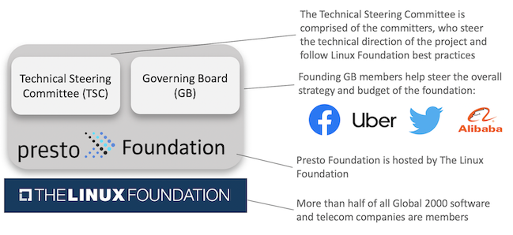

The Presto Foundation is the organization that oversees the development of the Presto open source project. Members of the Presto Foundation provide essential financial support for the collaborative development process, including tooling, infrastructure, and community conferences. 
The Presto Foundation joined the Linux Foundation in September 2019.
The Presto Foundation is hosted at the Linux Foundation, the non-profit which hosts the Linux kernel and many other open source projects. Founded in 2000, the Linux Foundation is supported by more than 1,000 members and is the world’s leading home for collaboration on open source software, open standards, open data, and open hardware.
Presto was developed at Facebook in 2012 as a high-performance distributed SQL query engine for large scale data analytics. Presto Foundation will operate under a community governance model with representation from each of the founding members. With this evolution Facebook will be collaborating with the broader ecosystem of users and contributors as one voice in the future of the Foundation.
The Presto Foundation has two main governing bodies: The Governing Board, and the Technical Steering Committee (TSC).
The Governing Board manages the Presto Foundation's funding in support of the Presto open source project. Organizations become members and pay dues, which the Governing Board then allocates. Premier members are entitled to appoint a representative to the Governing Board, and participate directly in funding decisions.
The TSC manages the open source development process, and is responsible for technical oversight of the project. This means continuing the development of Presto as an open source distributed SQL query engine, but also developing documentation, testing, integration, and the creation of artifacts that aid the development process. While the TSC is open for any observer to participate, Any contributor to the open source project may, through time, experience, and wise decision-making, be selected by their peers to be a voting member of the TSC.
It is important to note that while participaion on the Governing Board is limited to Presto Foundation members, anyone may earn the right to lead the TSC, regardless of their membership status.
The Presto Foundation has two membership levels: Premier, and Associate.
Premier members are entitled to appoint a representative to the Presto Foundation Governing Board and any Presto Foundation committees. In this way, Premier members are directly involved in policy and funding allocation decisions.
Associate members are limited to Associate Members of the Linux Foundation.
To become a member in the Presto Foundation, an organization must also be a member of the Linux Foundation. Organizations can become members in the Linux Foundation first, or both simultaneously.
Premier membership in the Presto Foundation is $10k annually, in addition to Linux Foundation membership.
There is no cost for Associate membership for qualifying organizations.
Please complete one of the Presto Foundation application forms:
We are already a Linux Foundation member, and want to join the Presto Foundation »
We are not yet a Linux Foundation member, and want to join both Foundations »
If you have questions about Presto Foundation membership, please reach out to Brian Warner <bwarner@linuxfoundation.org>.